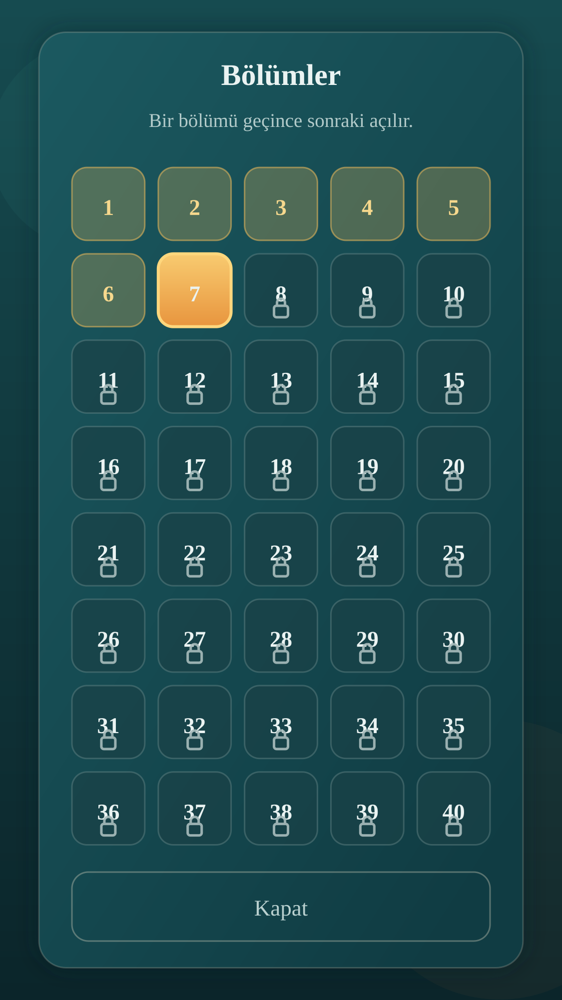
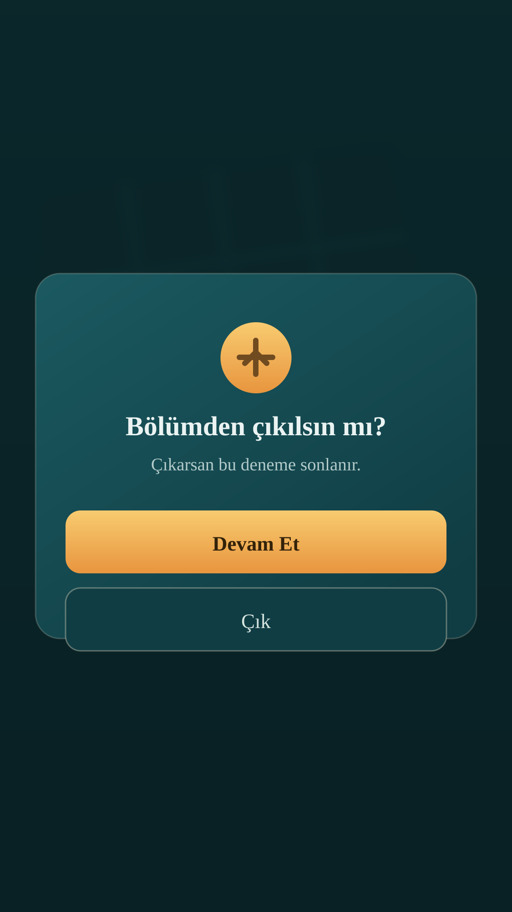
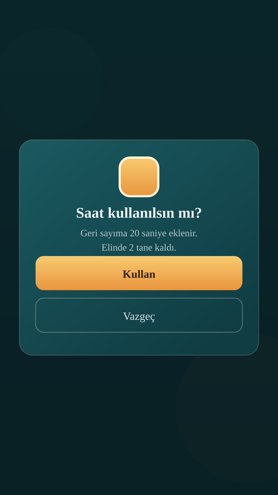
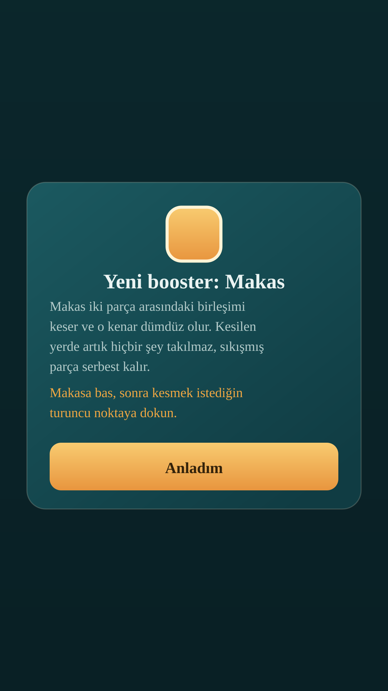
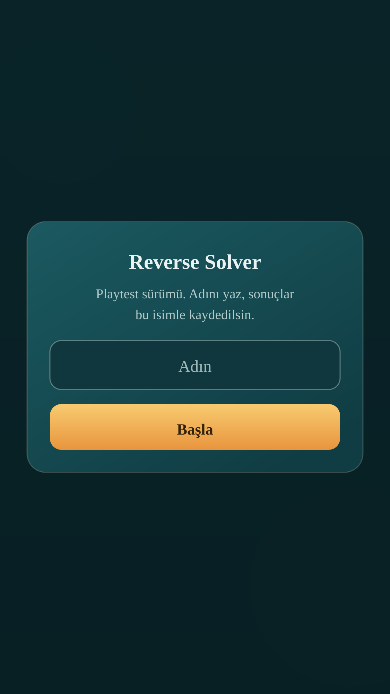
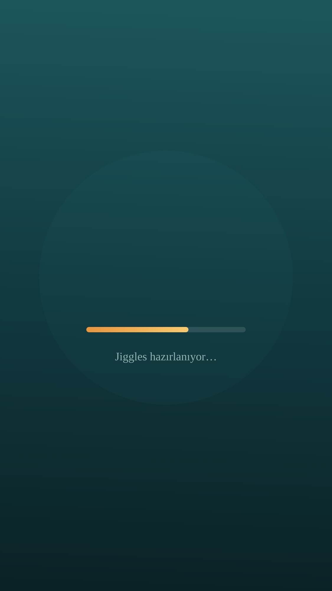

#21 Duraklatma / çıkış onayı

#22 Booster onayı

#23 Booster tanıtımı

#24 İsim sorma

Referans artboard 375×667 pt; SVG dosyaları 1125×2001 px (@3x). Booster kartları ilgili seviyelerde içerik ve ikon değiştirerek aynı düzeni kullanır.





